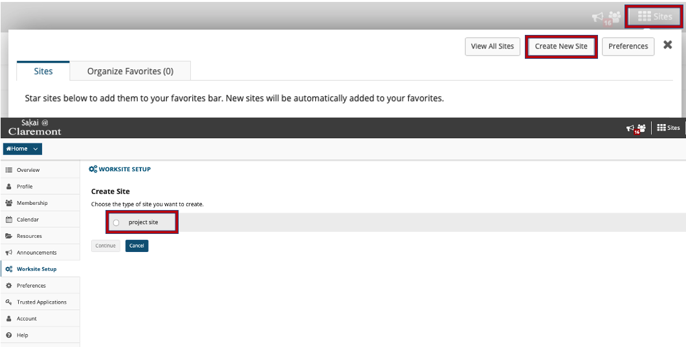
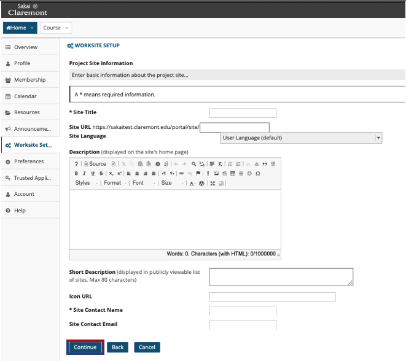
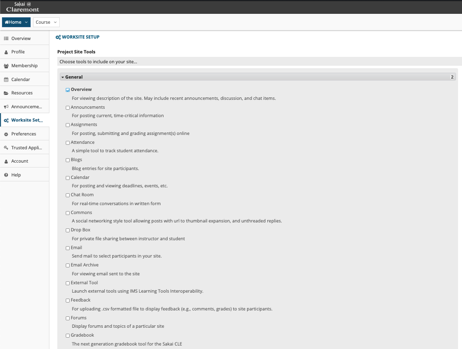
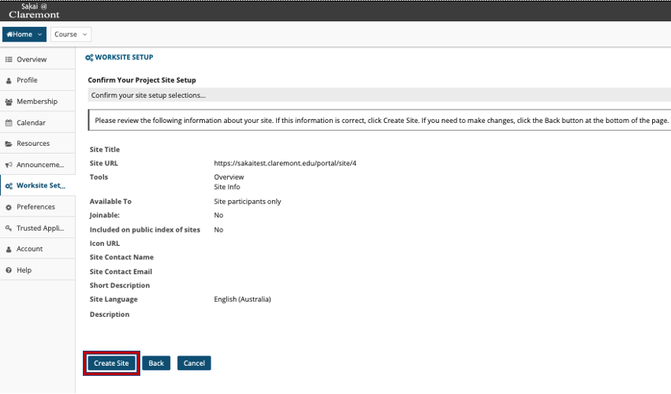

Overview
Project sites are typically worksites where a project director, team, or committee can make announcements, engage in online discussions, and share resources such as documents or links to other web sites. Project sites have all of the same tools available as course sites; however, they are typically not associated with credit course sections or academic terms. Unlike course sites, any registered user can create a project site.
1. You must login to create a project site. From Home click on "sites", "create new site", and "project site".- 
2. Enter your project site's titles, url, language, description, contact info, and then continue.- 
3. Next you may configure the Sakai tools to be available for your site..- 
4. After selecting tools, there is an option underneath where you have the ability to re-use materials from other sites.
5. Afterwards, you may configure the site's access settings.
6. Finally, click "create site".- 